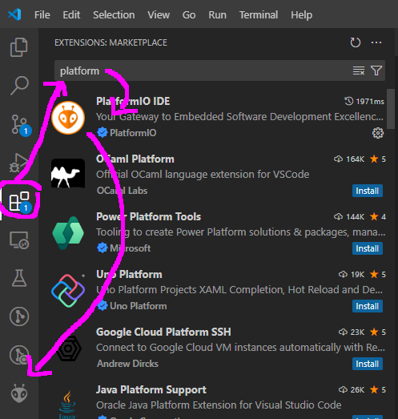

PlatformIO
Visual Studio Code
You can download VS Code from https://code.visualstudio.com/. Don't worry about what other extensions you need, you can easily install them whenever you need them.
PlatformIO extension
- Inside Visual Studio Code, go to the extensions tab. (CTRL+SHIFT+X)
- In the search bar, type "platformio"
- Install the one with the orange alien icon

Hello World
- go to PlatformIO window (click on the alien face in the left column)
- Choose "New Project"
- Alternatively, if you see the "PIO Home" window, you can click "+ new project" there.
- For board, choose "esp32-s3-devkitc-1". PlatformIO will start downloading necessary libraries
- Open platformio.ini - you should see the following:
[env:esp32-s3-devkitc-1]
platform = espressif32
board = esp32-s3-devkitc-1
framework = arduino
- add the following lines at the bottom:
board_build.arduino.memory_type = qio_opi
board_build.partitions = default_16MB.csv
board_upload.flash_size = 16MB
monitor_speed = 115200
lib_deps = bodmer/TFT_eSPI@^2.5.33
build_flags =
-DBOARD_HAS_PSRAM # N16R8V has PSRAM
-DARDUINO_USB_MODE=1 # necessary for serial port
-DARDUINO_USB_CDC_ON_BOOT=1 # necessary for serial port
Examples in GitHub
https://github.com/Fri3dCamp/badge_2024_arduino/tree/main/examples/platformio%20basic%20examples
If you just want to try all examples:
- In GitHub, goto https://github.com/Fri3dCamp/badge_2024_arduino
- Click "Fork"
- You now have the same repository, but in your own profile
- Click the green button
<> Code - copy the URL you see in the pop-up
- Open the Git Bash CLI where you want to create the forked repository
- Type
git cloneand paste the URL from the Github repository
Your own code on GitHub
- Download GIT from https://git-scm.com/downloads
- Create an account on https://github.com
- At the top of the screen, click "+", click "New repository"
- Follow the GitHub instructions to clone your repository to your local hard drive
- Code away!
- Open the Git Bash CLI in the root folder of your repository
git add .git commit -m "cool new program"git push- Check that your code has arrived on GitHub
Your code in the Fri3d Camp repository
- In GitHub, goto https://github.com/Fri3dCamp/badge_2024_arduino
- Click "Fork"
- You now have the same repository, but in your own profile
- Click the green button
<> Code - Copy the URL you see in the pop-up
- Open the Git Bash CLI where you want to create the forked repository
- Type
git cloneand paste the URL from the Github repository
So far, the instructions are exactly the same as for downloading the examples
- In github click on
mainto create a new branch - In the search bar, type a name of your choice, e.g.
newexample - Click
create branch newexamplefrom main - Open the Git Bash CLI in the root folder of your repository
git checkout -b newexample- Add your example
git add .git commit -m "I created a new example"git push- in GitHub, click
compare and pull request - Add a nice description,
- Click
Create pull request